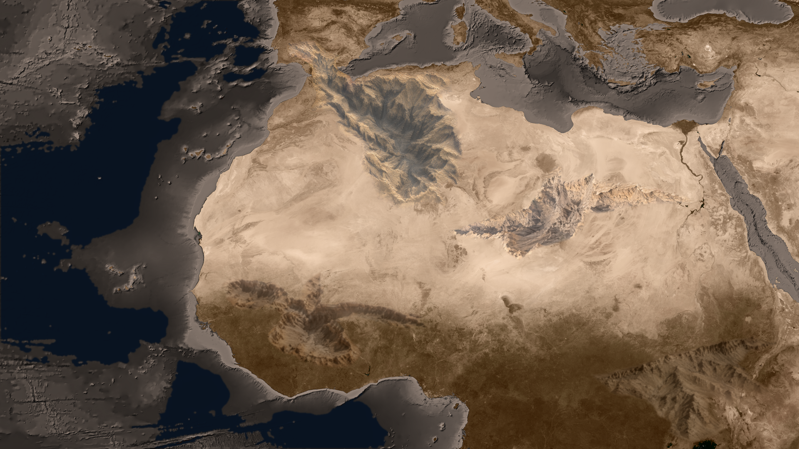

<!doctype html>
<html lang="en">
<meta charset="utf-8">
<meta name="viewport" content="width=device-width,initial-scale=1">
<title>Metropolis Dawn · Taerkastens</title>
<link rel="stylesheet" href="../../../assets/campaign-taerkasten/carte-interactive.css">
<svg width="0" height="0" style="position:absolute" aria-hidden="true">
 <filter id="terrain-detail" color-interpolation-filters="sRGB">
  <feGaussianBlur in="SourceGraphic" stdDeviation="48" result="local-average"/>
  <feComposite in="SourceGraphic" in2="local-average" operator="arithmetic" k2="2" k3="-1"/>
 </filter>
 <filter id="white-point" color-interpolation-filters="sRGB">
  <feComponentTransfer>
   <feFuncR type="table" tableValues="0 .1 .2 .3 .4 .5 .6 .7 .76 .79 .8"/>
   <feFuncG type="table" tableValues="0 .1 .2 .3 .4 .5 .6 .7 .76 .79 .8"/>
   <feFuncB type="table" tableValues="0 .1 .2 .3 .4 .5 .6 .7 .76 .79 .8"/>
  </feComponentTransfer>
 </filter>
 <filter id="campaign-tones" color-interpolation-filters="sRGB">
  <feComponentTransfer>
   <feFuncR type="table" tableValues=".035 .16 .33 .5 .63 .75 .85"/>
   <feFuncG type="table" tableValues=".035 .16 .33 .5 .63 .75 .85"/>
   <feFuncB type="table" tableValues=".035 .16 .33 .5 .63 .75 .85"/>
  </feComponentTransfer>
 </filter>
 <filter id="north-tones" color-interpolation-filters="sRGB">
  <feComponentTransfer>
   <feFuncR type="table" tableValues=".015 .065 .18 .40 .58 .70 .8"/>
   <feFuncG type="table" tableValues=".015 .065 .18 .40 .58 .70 .8"/>
   <feFuncB type="table" tableValues=".015 .065 .18 .40 .58 .70 .8"/>
  </feComponentTransfer>
 </filter>
 <filter id="hover-tones" color-interpolation-filters="sRGB">
  <feComponentTransfer>
   <feFuncR type="table" tableValues=".03 .12 .29 .48 .64 .76 .84"/>
   <feFuncG type="table" tableValues=".03 .12 .29 .48 .64 .76 .84"/>
   <feFuncB type="table" tableValues=".03 .12 .29 .48 .64 .76 .84"/>
  </feComponentTransfer>
 </filter>
</svg>
<link rel="stylesheet" href="campaign-hud.css">
<style>header,#mission-title,#settings{display:none!important}.campaign-hud{z-index:2}</style>
<main id="map" aria-label="Taerkasten campaign map">
 
 
 
 
 
 
 <canvas class="layer" id="territory-tint" width="1919" height="1079"></canvas>
 
 <canvas class="layer" id="missions" width="1919" height="1079"></canvas>
 <canvas class="layer" id="outside-shade" width="1919" height="1079"></canvas>
 <canvas class="layer" id="borders" width="1919" height="1079"></canvas>
 <header><span>METROPOLIS DAWN</span><h1>TAERKASTENS</h1><p>Campagne</p></header>
 <section id="mission-title" aria-live="polite"><span>CARTE DES OPÉRATIONS</span><h2>Survolez un territoire</h2><p>15 missions · découpage OG</p></section>
</main>
<details id="settings" open>
 <summary>Personnaliser la carte</summary>
 <label>Filtre jaune <input id="intensity" type="range" min="0" max="100" value="55"><output></output></label>
 <label>Éclat du jaune <input id="glow" type="range" min="0" max="100" value="30"><output></output></label>
 <label>Frontières <input id="border-alpha" type="range" min="0" max="100" value="75"><output></output></label>
 <label>Épaisseur <input id="border-width" type="range" min="5" max="30" value="13"><output></output></label>
 <div class="checks"><label><input id="grid" type="checkbox" checked>Quadrillage des missions</label><label><input id="all-lit" type="checkbox">Surbrillance complète</label><label><input id="numbers" type="checkbox">Numéros des missions</label></div>
 <details id="territories"><summary>Missions affichées · <b id="count">15 / 15</b></summary><div class="buttons"><button id="show-all">Tout afficher</button><button id="hide-all">Tout masquer</button></div><div id="mission-list"></div></details>
 <button id="reset">Réinitialiser les réglages</button>
 <a href="../../../assets/campaign-taerkasten/terrain-cotes-corrigees.png">Voir le fond sans filtres</a>
</details>
<script src="../../../assets/locale-en.js"></script>
<script src="../../../assets/briefings-xp/campaigns.js"></script>
<script src="../../../assets/campaign-taerkasten/carte-missions.js"></script>
<script src="campaign-hud.js"></script>
<script src="campaign-taerkasten.js"></script>
<script src="../../../assets/campaign-taerkasten/carte-interactive.js"></script>
</html>
